Алгебраик иммуннитетлик
Алгебраик иммунитет дастурий таъминоти
Буль функция учун “Алгебраик иммунитет” тушунчаси, 2004 йил киритилган бўлиб, мазкур параметр буль функция аннигилятори (нолловчи кўпхади) тушунчаси билан узвий боглик хисобланади.
Таъриф. g(x) 𝓕n функция
f(x)
𝓕n функция
f(x) 𝓕n
функциянинг аннигилятор функцияси дейилади, агар
f(x).g(x)=0 тенглик бажарилса. f(x)
функциянинг барча аннигиляторлар тўпламини 𝓐𝓃𝓃(f) оркали, deg
𝓕n
функциянинг аннигилятор функцияси дейилади, агар
f(x).g(x)=0 тенглик бажарилса. f(x)
функциянинг барча аннигиляторлар тўпламини 𝓐𝓃𝓃(f) оркали, deg d ўринли бўлган барча
аннигиляторлар тўпламини Ad(f) оркали, deg=r ўринли бўлган барча аннигиляторлар тўпламини
эса Ad=r(f) оркали
белгилаймиз.
d ўринли бўлган барча
аннигиляторлар тўпламини Ad(f) оркали, deg=r ўринли бўлган барча аннигиляторлар тўпламини
эса Ad=r(f) оркали
белгилаймиз.
Таъриф. f(х) 𝓕n
функциянинг Алгебраик
иммунитети (AI(f)) деб, f(x) ёки f(x)1 функциянинг нолдан фаркли аннигиляторлар
минимал даражасига айтилади.
𝓕n
функциянинг Алгебраик
иммунитети (AI(f)) деб, f(x) ёки f(x)1 функциянинг нолдан фаркли аннигиляторлар
минимал даражасига айтилади.
Яъни, формал кўринишда куйидагича ифодалаш ўринли:
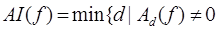 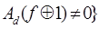
ёки
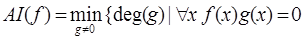 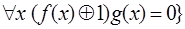
Аннигилятор функциянинг алгебраик чизиксизлик даражаси ва умуман AI параметрнинг киймати мухим кўрсатгичлардан бири хисобланиб, f(x) функция аннигиляторининг минимал алгебраик чизиксизлик даражасини wt(f) параметр оркали бахолаш бўйича куйидаги теоремалар мавжуд.
Теорема. Агар
f(x) 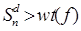 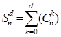 𝓕n функция ва
d
𝓕n функция ва
d {0,...,n} сон учун
{0,...,n} сон учун  d тенгсизлик ўринли.
Бу ерда
d тенгсизлик ўринли.
Бу ерда
Теорема. Агар
f(x) 𝓕n функция ва
d
𝓕n функция ва
d {0,...,n} сон учун
wt(f)>(2d-1)2n-d бажарилса, у холда min
deg(𝓐𝓃𝓃(f))>d тенгсизлик ўринли.
{0,...,n} сон учун
wt(f)>(2d-1)2n-d бажарилса, у холда min
deg(𝓐𝓃𝓃(f))>d тенгсизлик ўринли.
Шунингдек, AI параметрнинг бўлиши мумкин бўлган максимум кийматини аниклашда куйидаги теорема мухим ахамият касб этади.
Теорема. Ихтиёрий
f(x) 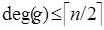 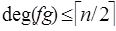 𝓕n функция учун
𝓕n функция учун
 𝓕n функция
мавжуд.
𝓕n функция
мавжуд.
Демак, ушбу теоремага кўра, ихтиёрий f(x) 𝓕n функция учун
куйидаги тенгсизлик ўринли эканлиги келиб
чикади:
𝓕n функция учун
куйидаги тенгсизлик ўринли эканлиги келиб
чикади:
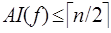
Маълумки, 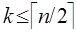
Шунингдек, тартиби 1 га тенг (яъни k=1) бўлган n ўзгарувчили буль функциялар сони (B1 – оркали бегилаймиз)ни аникловчи куйидаги тенглик исботланган:
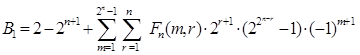
бу ерда: 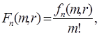 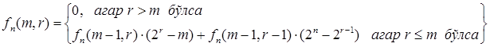
Куйида эса, амалий тадбики кенг бўлган баланслашган буль функциялар тўплами учун AI параметр кийматининг таксимланиши хакидаги теоремалар келтирилган.
Теорема. Айтайлик
Fn – барча баланслашган n ўзгарувчили буль функциялар
тўпламида текис таксимланган тасодифий катталик,
{dn} (n 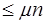 N) – эса ихтиёрий
натурал сонлар кетма-кетлиги бўлиб,
dn
N) – эса ихтиёрий
натурал сонлар кетма-кетлиги бўлиб,
dn
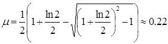
У холда,
AI(Fn) dn тенгсизликни
бажарилиш эхтимоллиги учун куйидаги лимит ўринли:
dn тенгсизликни
бажарилиш эхтимоллиги учун куйидаги лимит ўринли:
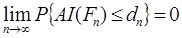
Теорема. Айтайлик
0 d
d n шартни
каноатлантирувчи n ва d сонлар
фиксирланган. Алгебраик чизиксизлик даражаси d га тенг ёки ундан кичик
бўлган барча функциялар таркибидан Хэмминг огирлиги w га тенг бўлган
функциялар сонини Aw – оркали белгилаймиз. Яъни:
n шартни
каноатлантирувчи n ва d сонлар
фиксирланган. Алгебраик чизиксизлик даражаси d га тенг ёки ундан кичик
бўлган барча функциялар таркибидан Хэмминг огирлиги w га тенг бўлган
функциялар сонини Aw – оркали белгилаймиз. Яъни:
Aw=|{ f 𝓕n |
deg(f)
𝓕n |
deg(f) d,
wt(f)=w}|
(6)
d,
wt(f)=w}|
(6)
Айтайлик Fn –
барча баланслашган n ўзгарувчили буль функциялар тўпламида текис
таксимланган тасодифий
катталик бўлсин. У холда, AI(Fn) d тенгсизликни бажарилиш эхтимоллиги учун куйидаги ифода
ўринли:
d тенгсизликни бажарилиш эхтимоллиги учун куйидаги ифода
ўринли:
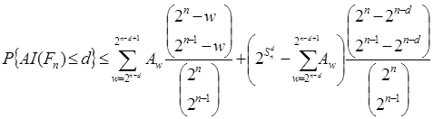
Юкоридаги икки теорема кайта шакллантирилган холда куйидагича ифодаланади.
Теорема. Айтайлик Fn – барча баланслашган n ўзгарувчили буль функциялар тўпламида текис таксимланган тасодифий катталик бўлсин. У холда, (0; 2ln2) интервалдан олинган ихтиёрий хакикий a сони учун куйидаги эхтимоллик лимити мавжуд:
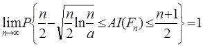
Яъни, деярли барча n ўзгарувчили баланслашган буль функциялар алгебраик иммунитети n/2 – асимтотик тартибга (бўлиши мумкин бўлган максимал кийматга) эга.
Буль функциянинг чизиксизлиги (Nf) ва AI(f) параметрлари ўртасидаги богликлик муносабатини аниклаш масаласи хам мухим хисобланади. Бугунги кунга кадар, ушбу масала юзасидан хам бир нечта тадкикотлар олиб борилиб тегишли ишлар эълон килинган. Хусусан, AI(f)=k тенглик ўринли бўлган ихтиёрий буль функцияларга нисбатан куйидаги тенгсизлик исботланган.
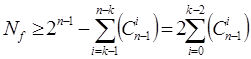
Ушбу (9)
тенгсизликдан келиб чикиб, максимал иммунитетга эга, яъни 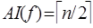
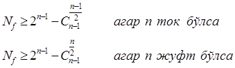
Шунингдек, r-тартибли чизиксизлик даражаси билан AI(f) ўртасидаги богликлик юзасидан хам кўплаб натижалар маълум.
Таъриф. f(х) 𝓕n
функция билан
барча g(x)
𝓕n
функция билан
барча g(x) 𝓕n
(deg(g)
𝓕n
(deg(g) r) функциялар
ўртасидаги энг кам Хэмминг масофасига f(х) функциянинг r-тартибли
чизиксизлиги (N(r)f) деб аталади, яъни:
r) функциялар
ўртасидаги энг кам Хэмминг масофасига f(х) функциянинг r-тартибли
чизиксизлиги (N(r)f) деб аталади, яъни:
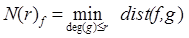
AI(f)=k тенглик ўринли бўлган ихтиёрий буль функцияларга нисбатан куйидаги тенгсизлик ўринли.
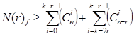
r=2 бўлган хол учун куйидаги тенгсизлик ўринли.
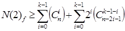
r>2 хол учун юкорида келтирилган богликликларга кўра аниклик даражаси янада юкори бўлган куйидаги бахолаш аникланди:
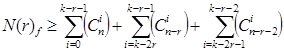
2009 йилда М.С.Лобанов томонидан химоя килинган диссертация иши хам мазкур богликлик муносабатларини янада мукаммаллаштириш ва аниклик даражасини оширишга йўналтирилган. Тадкикот давомида куйидига тенгсизлик исботланган.
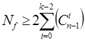
Шунингдек, r>1 бўлган турли холатлар учун хам богликлик муносабатлари аникланган.
S – блокнинг алгебраик иммунитети
S – блок (F(x) 𝓕n,m)
жадвалининг алгебраик криптотахлил усулига (тенгламалар системасини ечишнинг
аксарият усулларига нисбатан) бардошлилик хусусиятини кўрсатувчи “Алгебраик
иммунитет” тушунчасига турли
манбаларда ишларда куйидагича таъриф берилади:
𝓕n,m)
жадвалининг алгебраик криптотахлил усулига (тенгламалар системасини ечишнинг
аксарият усулларига нисбатан) бардошлилик хусусиятини кўрсатувчи “Алгебраик
иммунитет” тушунчасига турли
манбаларда ишларда куйидагича таъриф берилади:
Таъриф. Айтайлик, ихтиёрий y=F(x) 𝓕n,m –
акслантиришни каноатлантирувчи буль тенгламалар системаси куйидагича
бўлсин:
𝓕n,m –
акслантиришни каноатлантирувчи буль тенгламалар системаси куйидагича
бўлсин:
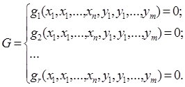
F(x) – функциянинг Алгебраик иммунитети (AI(F)) деб, (16) системадаги тенгламаларнинг минимал алгебраик чизиксизлик даражасига айтилади. Яъни, формал кўринишда куйидагича ифодалаш ўринли:
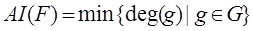
Демак, S – блок учун AI параметрнинг юкори бўлиши тенгламалар системасининг юкори алгебраик чизиксизлик даражасига эга бўлишини таъминлайди.
Машклар. Куйида берилган буль функция ва S-блок жадвалларининг алгебраик иммунитетини хисобланг.
1) f(x1,x2)= x1x2x1x2;
2) f(x1,x2)= x1x2x3x21;
3) S(2x1)={,0 1, 1, 0};
4) S(2x1)={1, 1, 0, 1}.